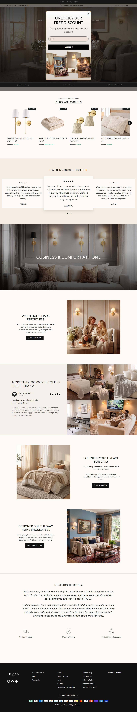
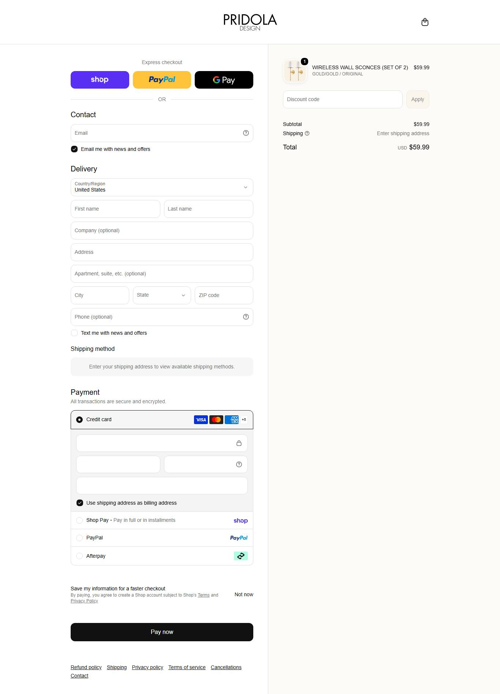

pridola.com MODELAR concorrente do país escolhido
Copie: Arandela vendida em par (duas por um preço) Não copie: Devolução só com aprovação prévia pelo chat.O que o veredito cobre: Arandela sem fio em par, lâmpada recarregável como complemento e presença forte no Reino Unido. Não cobre os itens de casa fora do nicho.
00Ficha de bolso: catálogo, idade, momento e unidades estimadas
| Item | Leitura |
|---|---|
| Momento | CAINDO visitas: jul/2026 138, ago/2026 164, set/2026 0 |
| 1º produto cadastrado | 02/04/2024: WIRELESS WALL SCONCES (SET OF 2) |
| Produto mais novo | 11/09/2026: NATURAL WIRELESS WALL SCONCE |
| 1º registro no Wayback | não obtidosem registro lido |
00Sinais lidos no site da loja
| Item | O que o site mostra |
|---|---|
| Plataforma | Shopify (catálogo público respondeu) |
| Apps achados no código | klaviyo, loox, stamped, recart/postscript, Shopify Payments e Shop Pay, afterpay, bold, clarity, gempages, gtag, gtm, hotjar, klarna, pinterest, shop-pay, snap, tiktok, triplewhale |
| Pixels e tags | Pixel da Meta · Google Analytics 4 G-LG6X4ZDJ9W · Pinterest |
| Redes sociais no site | facebook.com/pridoladesignus instagram.com/pridoladesign pinterest.com/pridola |
| Frete declarado | Prazo = processamento + trânsito (texto das taxas não lido por completo); app de seguro de envio (US$ 1 a 5) |
| Devolução e garantia | 30 dias, só com aprovação prévia pelo chat |
| País provável da operação | Estados Unidos (vendor também Pridola.dk, ShopWill) |
| Ranking Tranco | não obtidosem ranking: tráfego abaixo do limiar do Tranco |
| Páginas no mapa do site | 5 endereços; nenhum advertorial achado |
| Avaliações na página de produto | não obtidoo widget de avaliação carrega por script e a leitura pública não trouxe o número |
01Produto campeão
WIRELESS WALL SCONCES (SET OF 2)
Primeiro produto da ordem "mais vendido" da própria loja, lida em 06/10/2026 (não traz quantidade vendida). observado
Escada de oferta observada (order bump, upsell e pacotes)
| Degrau | O que é | Preço | Evidência |
|---|
02Mídia paga
| Ritmo de criativo | Valor | Leitura |
|---|---|---|
| criativos únicos observados | sem rolagem não obtidosem leitura de rolagem | amostra, não o total de criativos da loja |
| duplicação (mesmo texto, vários anúncios) | sem leitura de textos repetidos não obtidoesta loja não entrou na leitura de texto da análise de anúncios | quanto o mesmo texto é reaproveitado com mídias diferentes |
| cadência por dia | sem série diária não obtidoa Biblioteca pública não entrega a data de cada anúncio da amostra inteira; a rolagem tem teto de 500 e ordena por recência | não extrapolar uma cadência: seria número inventado |
| longevidade máxima | não obtidonão lido | piso: o anúncio mais antigo pode estar fora da amostra |
| anúncios com 60 dias ou mais | sem leitura não obtidoloja fora da tabela de escala | anúncio que fica mais de 60 dias no ar costuma ser anúncio que se paga; isso não prova lucro |
| mix de formato | sem leitura não obtidosem mix lido |
Criativo campeão desta loja
Nenhum dos 10 criativos mais escalados do mercado é desta loja. A leitura de criativo abaixo vem dos ângulos observados.
03Tráfego real
04Faturamento mensal estimado e investimento em tráfego
Benchmark de custo do setor: CPM (custo por mil impressões), CPC (custo por clique) e CPA (custo por aquisição) por anunciante não existem como dado público. O CPC médio no Reino Unido é £ 0,34 (benchmark de terceiros, não medido nesta pesquisa). O ROAS (retorno sobre o gasto em anúncio) de cada loja só aparece onde há visitas medidas, e é sinal, não dado.
05Páginas capturadas


No celular
06Anatomia do vencedor inferido
Ângulos ativos observados
| # | Ângulo e prova |
|---|---|
| 1 | Anúncios ativos pela URL na Biblioteca da Meta (todos os países, 2026-10-06): 0 ativos e 30 no histórico das páginas da loja. domínio pridola.com devolve 0 ativos (a loja redireciona para pridola.co); busca "pridola"/"pridola.co" devolve cerca de 1.893 ativos, mas é busca por texto e mistura menções. |
07Catálogo, oferta e identificação
- Plataforma
- Shopify (o catálogo público respondeu)
- Apps
- não obtidoapps não lidos
- Pixel Meta
- não obtidonenhuma fonte desta pesquisa traz o pixel da loja
- Catálogo
- 47 produtos lidos; preço mediano do catálogo USD 59,99. Primeiro produto cadastrado em 2024-04-02 (WIRELESS WALL SCONCES (SET OF 2)), o mais novo em 2026-09-11.
- Frete
- Prazo = processamento + trânsito (texto das taxas não lido por completo); app de seguro de envio (US$ 1 a 5)
- Garantia
- 30 dias, só com aprovação prévia pelo chat
- Prazo e BNPL
- Prazo = processamento + trânsito (texto das taxas não lido por completo); app de seguro de envio (US$ 1 a 5) · nenhum parcelamento (BNPL) detectado nos meios de pagamento lidos
- Meios de pagamento
- Shopify Payments e Shop Pay (vistos no código)
- Reviews
- não obtidoavaliações não lidas
- Redes
- não obtidorede social não coletada neste levantamento
- Origem provável
- Estados Unidos e Dinamarca (vendor Pridola.dk); domínio redireciona para pridola.co
- Domínio
- · Tranco: não lido
- Arandela vendida em par (duas por um preço)
- Lâmpada recarregável e carregador como complemento do pedido
- Devolução só com aprovação prévia pelo chat
- Seguro de envio pago no carrinho
08Dados não obtidos
| Dado | Motivo | Método tentado |
|---|---|---|
| Venda e faturamento | ninguém publica venda de loja privada | visitas por mês do SimilarWeb e preço do catálogo |
| Pixel da Meta | nenhuma fonte desta pesquisa identifica o pixel da loja | leitura pública do HTML e dos apps; sem inspeção de navegador |
| Tráfego (SimilarWeb) | o SimilarWeb não tem dado deste domínio (tráfego abaixo do limiar da fonte) | leitura do SimilarWeb: o plano gratuito liberou poucas consultas e bloqueou as seguintes |
| CPM, CPC e CPA desta loja | a Meta não publica custo por anunciante | Biblioteca de Anúncios pública e benchmark de terceiros (só o clique médio no Reino Unido) |
| Valor investido em anúncios e impressões | a Meta só publica gasto de anúncio político; alcance só na União Europeia | API oficial e Biblioteca pública |
09Veredito e classificação
10Os mais vendidos (da própria loja)
08Sinal web (SimilarWeb)
Links para conferir
09Anúncios (Meta e Google)
00Os 10 mais vendidos: volume de busca e Google Trends no Reino Unido
| # | Produto mais vendido | Tipo de produto | Buscas por mês no Reino Unido (todo o tipo) | Google Trends (clique para abrir) |
|---|---|---|---|---|
| 1 | WIRELESS WALL SCONCES (SET OF 2) US$ 59,99 | Luminária de parede | 94.250 termo: rechargeable wall light | Reino Unido: rechargeable wall light 12 meses ▲ 93% · pico em set, ago |
| 2 | PRIDOLA WIRELESS RECHARGEABLE LIGHT BULBS (SET OF 2) US$ 69,99 | Luminária de mesa recarregável | 33.860 termo: rechargeable table lamp | Reino Unido: rechargeable table lamp 12 meses ▲ 72% · pico em set, nov |
| 3 | PRIDOLA BULBS EXTRA FAST CHARGER (DUALPORT) US$ 24,99 | Cabo, carregador e peça | não obtidotipo fora do catálogo do nicho | não obtidosem termo |
| 4 | PRIDOLA SECURESTICK ADHESIVE PATCHES (SET OF 2) US$ 19,99 | Outro tipo de produto | não obtidotipo fora do catálogo do nicho | não obtidosem termo |
| 5 | NATURAL WIRELESS WALL SCONCE US$ 59,99 | Luminária de parede | 94.250 termo: rechargeable wall light | Reino Unido: rechargeable wall light 12 meses ▲ 93% · pico em set, ago |
| 6 | MODERN TABLE LAMP US$ 69,99 | Luminária de mesa recarregável | 33.860 termo: rechargeable table lamp | Reino Unido: rechargeable table lamp 12 meses ▲ 72% · pico em set, nov |
| 7 | WIRELESS SAND WALL SCONCES (SET OF 2) US$ 59,99 | Luminária de parede | 94.250 termo: rechargeable wall light | Reino Unido: rechargeable wall light 12 meses ▲ 93% · pico em set, ago |
| 8 | WIRELESS CYLINDRICAL WALL SCONCES (SET OF 2) US$ 59,99 | Luminária de parede | 94.250 termo: rechargeable wall light | Reino Unido: rechargeable wall light 12 meses ▲ 93% · pico em set, ago |
| 9 | WIRELESS WALL SCONCES ( SET OF 2 ) US$ 59,99 | Luminária de parede | 94.250 termo: rechargeable wall light | Reino Unido: rechargeable wall light 12 meses ▲ 93% · pico em set, ago |